Email: odoomates@gmail.com
Plan people, crews, equipment, vehicles and rooms on a Gantt chart, then publish the schedule and send it to the people who do the work.
Built on the resources of Odoo: people with or without an employee record, machines, vans and rooms.
Screens from a test database with the demo data.
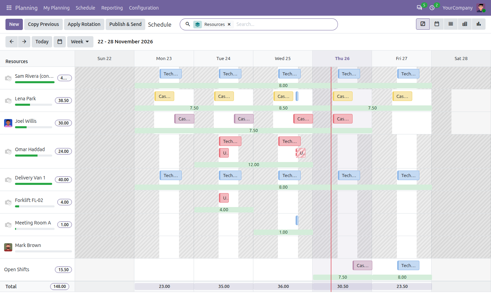
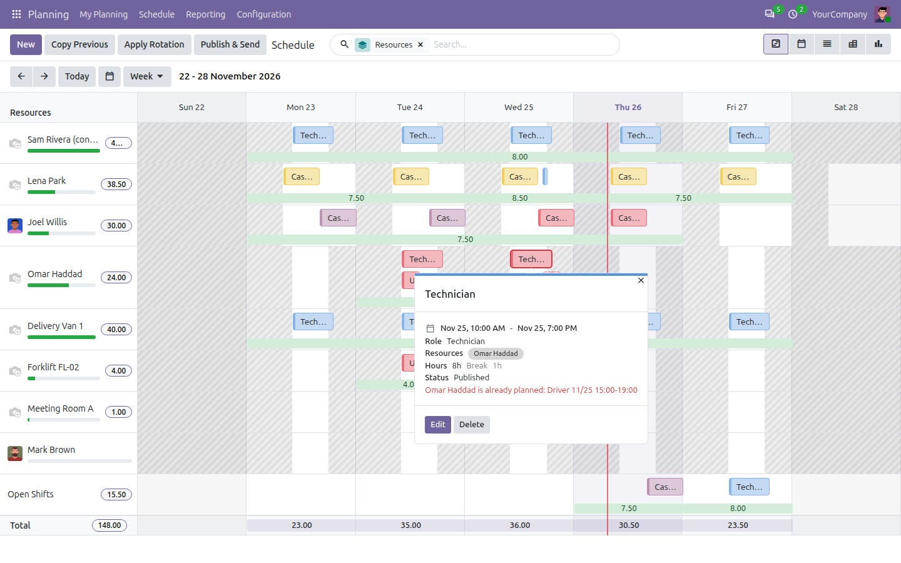
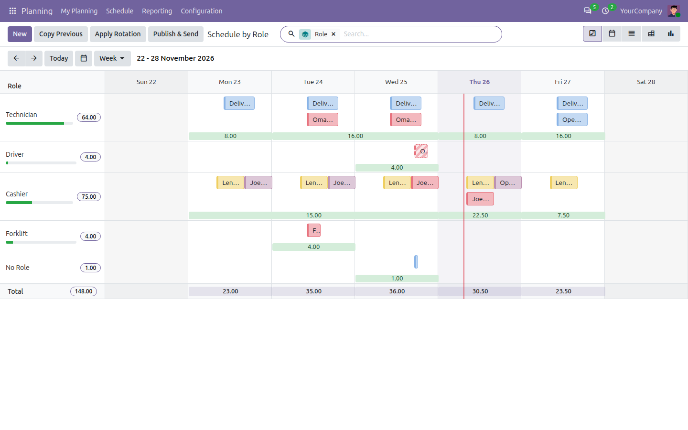
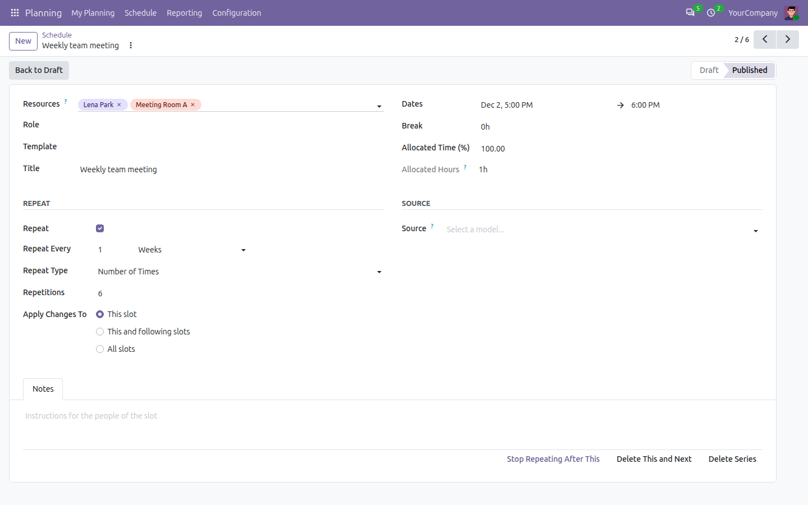
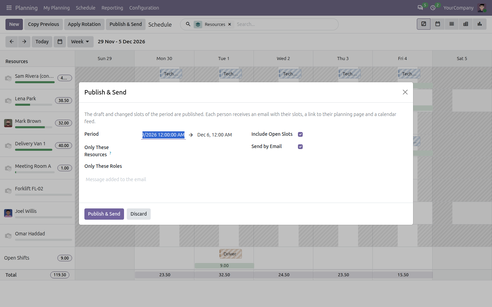
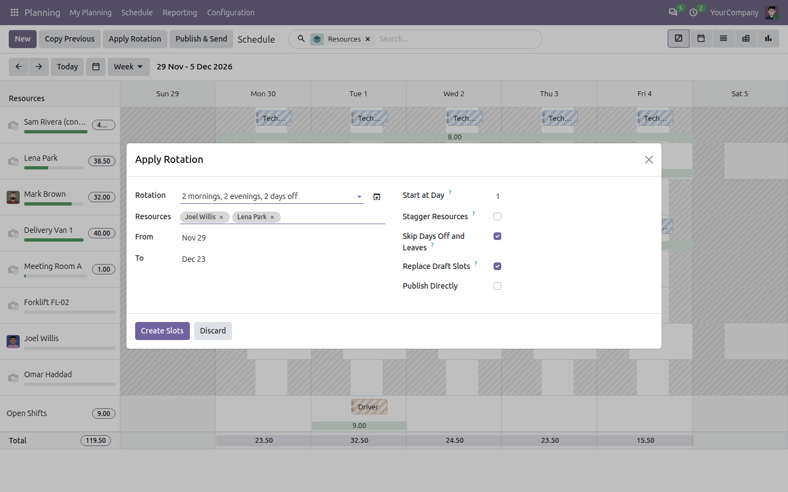
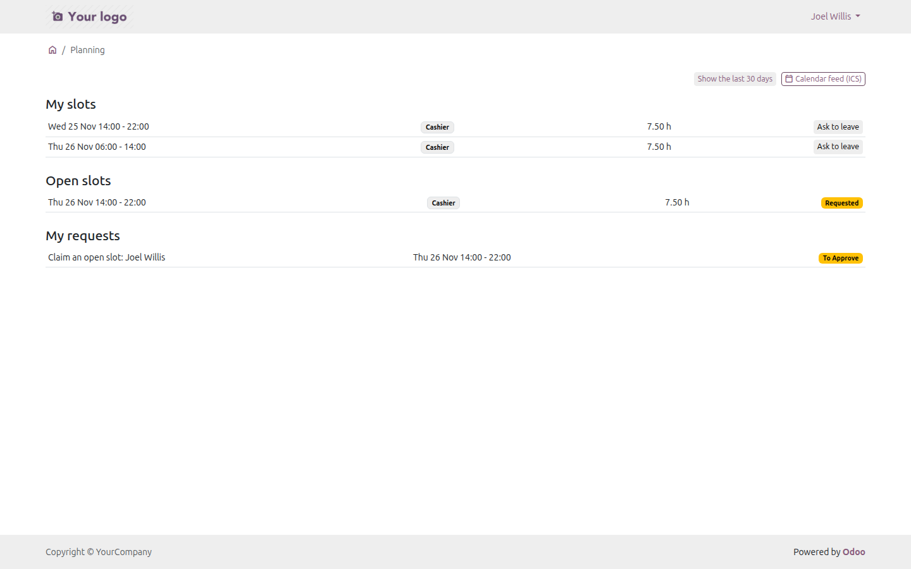
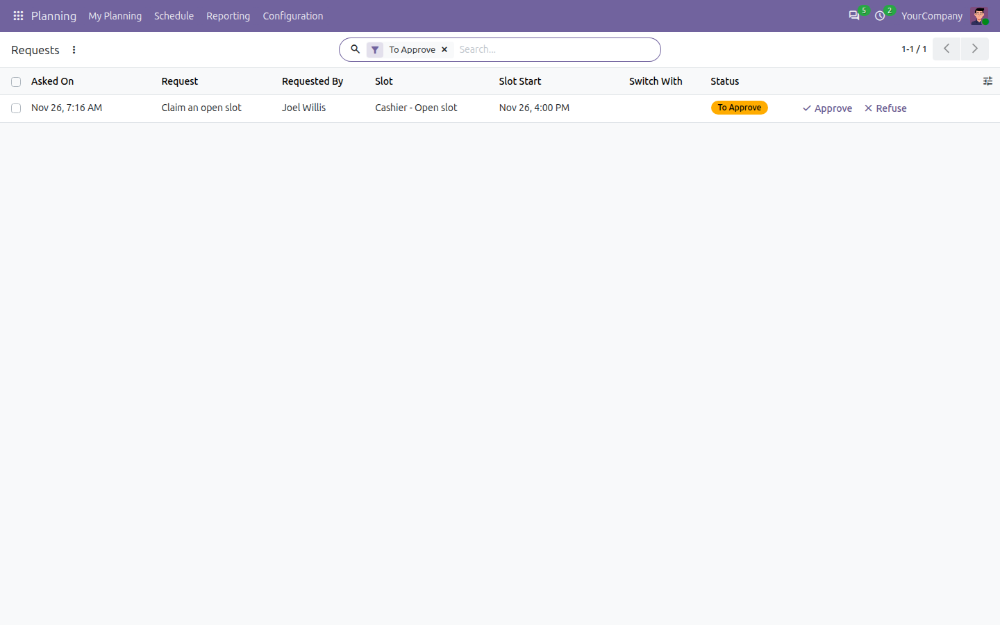
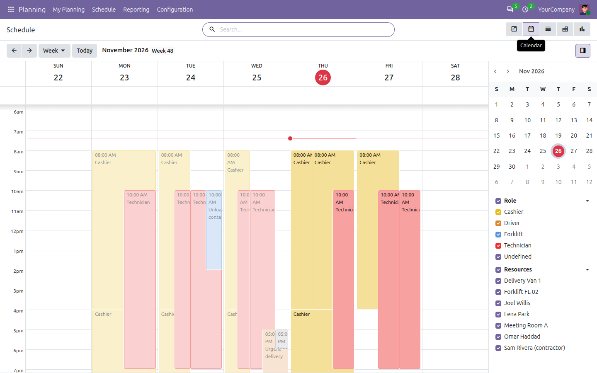
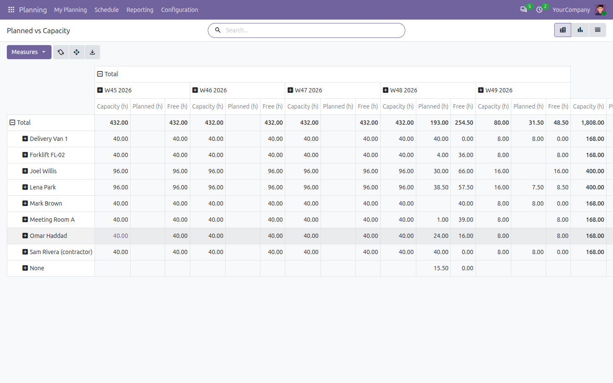
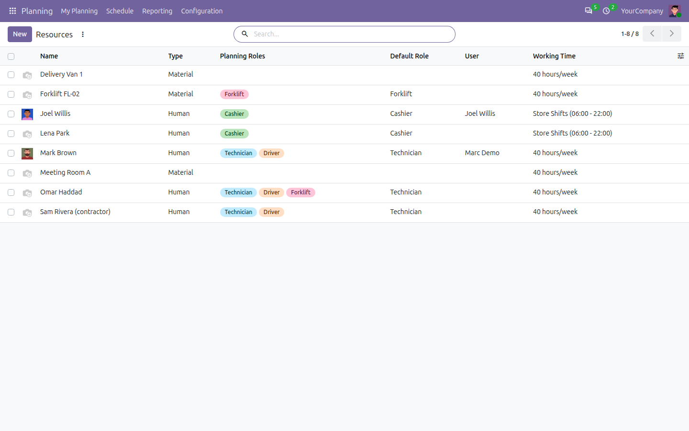
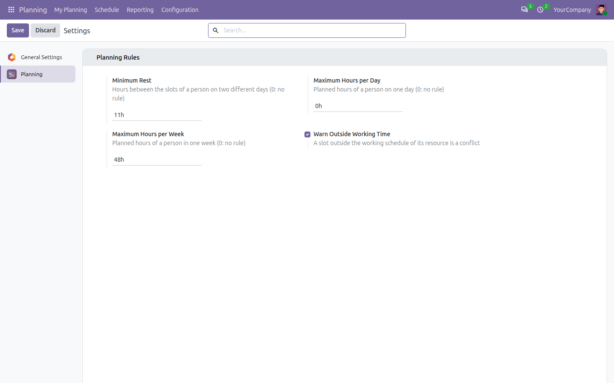
Your rating helps others find it; your requests and pull requests decide what comes next.
★ Rate us on Odoo Apps 💡 Request a feature 🐛 Report an issue ★ Star us on GitHub